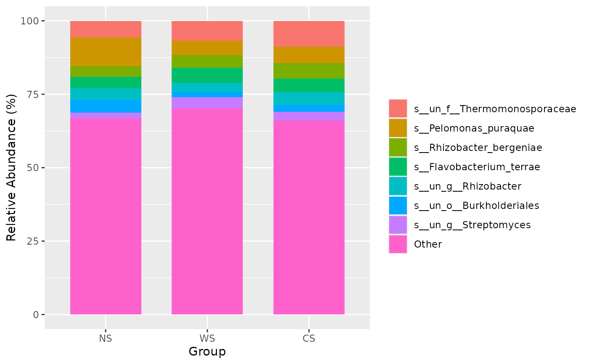
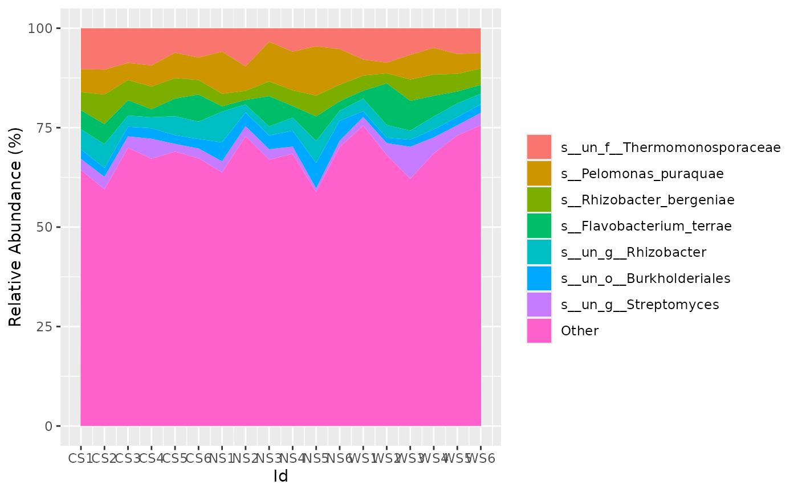
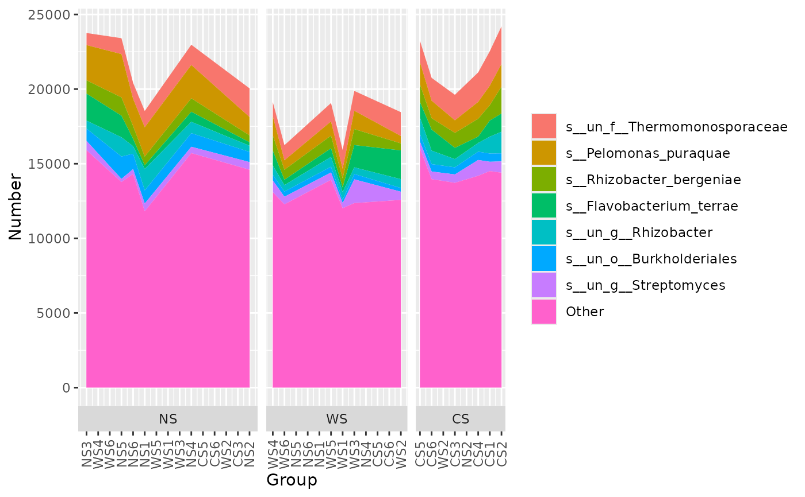

Plot a stack plot
Plot a area plot
Usage
stackplot(
otutab,
metadata = NULL,
group = "Group",
get_data = FALSE,
bar_params = list(width = 0.7, position = "stack"),
topN = 8,
others = TRUE,
relative = TRUE,
legend_title = "",
stack_order = TRUE,
group_order = FALSE,
facet_order = FALSE,
style = c("group", "sample")[1],
flow = FALSE,
flow_params = list(lode.guidance = "frontback", color = "darkgray"),
number = FALSE,
repel = FALSE,
format_params = list(digits = 2),
text_params = list(position = position_stack())
)
areaplot(
otutab,
metadata = NULL,
group = "Group",
get_data = FALSE,
bar_params = list(position = "stack"),
topN = 8,
others = TRUE,
relative = TRUE,
legend_title = "",
stack_order = TRUE,
group_order = FALSE,
facet_order = FALSE,
style = c("group", "sample")[1],
number = FALSE,
format_params = list(digits = 2),
text_params = list(position = position_stack())
)Arguments
- otutab
otutab
- metadata
metadata
- group
one group name of columns of metadata
- get_data
just get the formatted data?
- bar_params
parameters parse to
geom_bar- topN
plot how many top species
- others
should plot others?
- relative
transfer to relative or absolute
- legend_title
fill legend_title
- stack_order
the order of stack fill
- group_order
the order of x group
- facet_order
the order of the facet
- style
"group" or "sample"
- flow
should plot a flow plot?
- flow_params
parameters parse to
geom_flow- number
show the number?
- repel
use the ggrepel::geom_text_repel instead of geom_text
- format_params
parameters parse to
format- text_params
parameters parse to
geom_text
Examples
data(otutab)
stackplot(otutab, metadata, group = "Group")

# \donttest{
if (interactive()) {
stackplot(otutab, metadata,
group = "Group", style = "sample",
group_order = TRUE, flow = TRUE, relative = FALSE
)
}
# }
data(otutab)
areaplot(otutab, metadata, group = "Id")

# \donttest{
areaplot(otutab, metadata,
group = "Group", style = "sample",
group_order = TRUE, relative = FALSE
)

# }